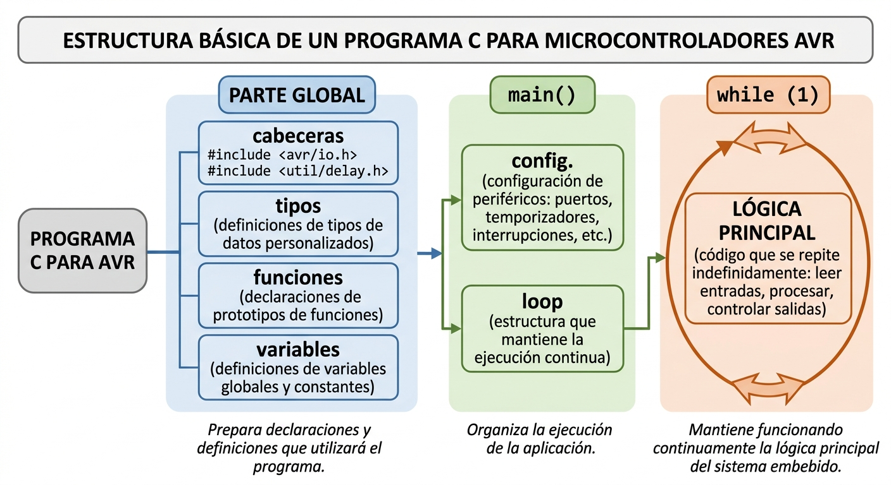

ESTRUCTURA DE UN PROGRAMA EN C PARA AVR
INTRODUCCIÓN
En este artículo vamos a comprender cómo se organiza un programa para un microcontrolador AVRescrito en lenguaje C.
Cuando se trabaja con un AVR mediante avr-gcc, el programa no se estructura exactamente igual que una aplicación convencional para un computador. En un microcontrolador el código escrito en C, termina formando parte de una aplicación freestanding, es decir, un programa que normalmente se ejecuta sin un sistema operativo que proporcione servicios como procesos, consola, archivos o gestión de memoria.
Aun así, el lenguaje C mantiene su estructura fundamental: existen archivos de cabecera, definiciones, declaraciones, funciones, variables y una función main() desde la que comienza la ejecución de la aplicación.

1. EL ENCABEZADO DEL PROGRAMA
Un encabezado profesional incluye el nombre del proyecto, autor una descripción del programa, siguiendo un estilo de documentación técnica seria. No forma parte del lenguaje C y se incluyen como bloques de comentario.
/*
* ============================================================
* Proyecto : C. Programación AVR – Secuencia de LEDs con barrido
* Archivo : led_sequence.c
* Autor : Miguel Calisaya
* Fecha : 2026
*
* Descripción:
* Programa en lenguaje C para microcontroladores AVR que
* configura el puerto D como salida y genera una secuencia
* de encendido de LEDs activos en nivel bajo, realizando un
* barrido ascendente y descendente mediante operaciones
* de manipulación de bits.
*
* Microcontrolador objetivo:
* - AVR de 8 bits (ej. ATmega88PA, ATmega328P)
*
* Compilador:
* - avr-gcc
*
* ============================================================
*/2. ESTRUCTURA CONCEPTUAL DE UN PROGRAMA AVR
Para trabajar con microcontroladores AVR no es necesario memorizar esta estructura como si fuera una plantilla rígida; no es una sintaxis obligatoria de C. Pero si nos ofrece un esquema de como se organiza un programa coodificado en lenguaje C.
Lo importante es comprender qué papel cumple cada parte: el código situado antes de main() prepara las declaraciones y definiciones que utilizará el programa; main() organiza la ejecución de la aplicación; y el while(1) mantiene funcionando continuamente la lógica principal del sistema embebido.
Una estructura conceptual habitual puede representarse así:
[preambulo]
[directivas de inclusión]
[definiciones y constantes]
[declaración de tipos]
[variables globales]
[declaración de funciones]
int main(void)
{
[declaración de variables locales]
[inicialización]
[configuración del microcontrolador]
while (1)
{
[código que se ejecuta continuamente]
}
[finalización]
return (0);
}
[definición de funciones]Esta estructura no es una obligación sintáctica de C. Es una forma ordenada de organizar un programa, especialmente útil cuando el código comienza a crecer.
3. EL PREÁMBULO DEL PROGRAMA
En muchos ejemplos de programación se denomina preámbulo a la parte situada antes de main(). Es una denominación útil desde el punto de vista didáctico.
En esa zona pueden aparecer diferentes elementos:
Programa C
│
├── Inclusión de cabeceras
├── Definiciones y constantes
├── Declaración de tipos
├── Variables globales
└── Declaración de funcionesCada uno cumple una función diferente.
3.1. Inclusión de archivos de cabecera: #include
La directiva:
#includeindica al preprocesador de C que debe incorporar el contenido de un archivo de cabecera en ese punto del código fuente.
En un programa AVR aparecen con frecuencia:
#include <avr/io.h>
#include <util/delay.h>3.1.1. avr/io.h
#include <avr/io.h>
Es una de las cabeceras fundamentales cuando se programa un AVR utilizando avr-gcc.
Proporciona las definiciones específicas del dispositivo seleccionado para la compilación.
Entre otras cosas, permite utilizar nombres simbólicos correspondientes a registros y bits del microcontrolador.
Por ejemplo:
DDRD
PORTD
PIND
PD0
PD1En lugar de tener que trabajar directamente con direcciones numéricas.
El contenido concreto que proporciona avr/io.h depende del dispositivo AVR seleccionado mediante las opciones de compilación.
Por eso no debe pensarse en avr/io.h como una tabla universal idéntica para todos los AVR. La cabecera incluye las definiciones correspondientes al microcontrolador que se está compilando.
3.1.2. util/delay.h
#include <util/delay.h>Proporciona funciones de retardo como:
_delay_ms()y:
_delay_us()Por ejemplo:
_delay_ms(100);solicita un retardo de aproximadamente 100 ms.
Estas funciones son especialmente útiles en programas de aprendizaje y en aplicaciones sencillas.
Sin embargo, es importante comprender que se trata de retardos bloqueantes. Mientras se ejecuta el retardo, el flujo normal del programa permanece dentro de esa función y no continúa con las instrucciones siguientes.
Además, el funcionamiento de estos retardos depende de que la frecuencia de reloj utilizada por el compilador esté correctamente definida.
3.2. Definiciones y constantes
Después de las cabeceras pueden aparecer definiciones mediante el preprocesador.
Por ejemplo:
#define LED_DELAY 100Esto permite utilizar un nombre simbólico en lugar de repetir directamente un valor:
_delay_ms(LED_DELAY);También pueden definirse máscaras de bits:
#define LED_PIN PB0El uso de nombres simbólicos mejora la legibilidad y facilita modificar posteriormente determinados valores.
Debe distinguirse una macro definida mediante #define de una variable de C. Una macro es procesada por el preprocesador antes de que el compilador analice el programa.
3.3. Declaración de tipos
Un programa puede necesitar declarar tipos propios mediante mecanismos como:
typedefo:
structPor ejemplo:
typedef struct
{
uint8_t estado;
uint8_t contador;
} dispositivo_t;En programas pequeños para AVR probablemente esta sección no aparezca. En aplicaciones mayores puede ser útil para organizar estructuras de datos y representar estados de periféricos o módulos del sistema.
3.4. Variables globales
También pueden declararse variables fuera de cualquier función:
uint8_t contador;Una variable declarada en este ámbito tiene duración de almacenamiento estática y puede ser utilizada por las funciones que tengan acceso a ella.
En sistemas embebidos las variables globales pueden ser útiles, pero deben utilizarse con criterio. Un exceso de variables globales puede dificultar comprender qué parte del programa modifica cada dato.
Cuando una variable solamente se necesita dentro de main() o dentro de una función determinada, se llama variable local y normalmente es preferible declararla en ese ámbito.
3.5. Declaración de funciones
Antes de main() también pueden aparecer los prototipos de funciones.
Por ejemplo:
void configurar_puerto(void);
void encender_led(uint8_t pin);Un prototipo informa al compilador de que existe una función, indicando:
- su nombre;
- el tipo de dato que devuelve;
- los parámetros que recibe.
La definición completa puede aparecer posteriormente:
void configurar_puerto(void)
{
/* Código */
}
Esto permite que main() pueda utilizar una función cuya implementación aparece más adelante en el archivo.
Por ejemplo:
void configurar_puerto(void);
int main(void)
{
configurar_puerto();
while (1)
{
}
return 0;
}
void configurar_puerto(void)
{
/* Configuración */
}4. LA FUNCIÓN MAIN()
La función:
int main(void)
En muchos manuales se dice que la función main() es el punto de entrada de la aplicación escrita en C; esto es así pero sólo desde la perspectiva del programa en C.
Lo cierto es que, después de un reset, existe una secuencia de código de arranque (startup code) que forma parte del entorno de ejecución y prepara determinadas condiciones necesarias antes de transferir el control a main().
Una forma habitual de estructurarla es:
int main(void)
{
[inicialización]
[configuración]
while (1)
{
[funcionamiento normal]
}
return 0;
}4.1. Declaración de variables locales
Las variables que solamente necesita main() pueden declararse dentro de la propia función:
int main(void)
{
uint8_t contador;
...
}
Estas son variables locales de main().
Su ámbito está limitado a esa función.
Esto permite separar claramente los datos que necesita una función de aquellos que deben ser accesibles desde diferentes partes del programa.
4.2. Inicialización del microcontrolador
Una vez declaradas las variables locales, normalmente se realiza la inicialización necesaria para comenzar a trabajar.
En un programa AVR puede incluir, dependiendo de la aplicación:
- configuración de puertos GPIO;
- configuración de temporizadores;
- configuración de interrupciones;
- configuración de interfaces seriales;
- configuración del ADC;
- configuración de otros periféricos.
Por ejemplo:
DDRB |= (1 << PB0);
configura PB0 como salida.
La inicialización debe realizarse antes de utilizar el periférico correspondiente.
Es importante distinguir esta inicialización realizada por nuestro programa de la inicialización realizada previamente por el código de arranque del entorno AVR.
4.3. Configuración
En programas sencillos, la inicialización y la configuración pueden parecer una misma cosa.
Por ejemplo:
DDRB |= (1 << PB0);es simultáneamente una configuración del hardware y una operación que forma parte de la inicialización de nuestra aplicación.
En programas más grandes puede ser útil separar conceptualmente:
Inicialización
│
├── Variables
├── Estado inicial
└── Hardware básico
Configuración
│
├── GPIO
├── Timer
├── UART
├── ADC
└── InterrupcionesNo son categorías obligatorias del lenguaje C. Son una forma de organizar el programa para hacerlo más comprensible.
5. EL BUCLE PRINCIPAL
Una característica habitual de los sistemas embebidos es que el programa debe permanecer funcionando continuamente.
Por ello es frecuente encontrar:
while (1)
{
/* Código principal */
}La expresión:
1es una constante entera cuyo valor es distinto de cero.
En una condición de C:
0 → falso
≠ 0 → verdaderoPor tanto:
while (1)equivale conceptualmente a decir:
Mientras la condición sea verdadera, continúa ejecutando el bloque.
Como 1 siempre es verdadero, el bucle no termina por sí mismo.
5.1. ¿Qué ocurre dentro del while(1)?
Aquí se encuentra normalmente el funcionamiento principal de la aplicación.
Por ejemplo:
while (1)
{
leer_entradas();
procesar_datos();
actualizar_salidas();
}El microcontrolador ejecuta estas operaciones una y otra vez:
leer entradas
↓
procesar
↓
actualizar salidas
↓
leer entradas
↓
procesar
↓
actualizar salidas
↓
...Este modelo se conoce habitualmente como superloop o bucle principal.
No es obligatorio utilizar este modelo en todos los programas AVR. Una aplicación puede depender fuertemente de interrupciones, temporizadores u otras técnicas. Sin embargo, el while(1) es una estructura fundamental en muchos programas embebidos sencillos y en numerosos ejemplos de aprendizaje.
5.2. return (0) al final de main()
La función main() está declarada como:
int main(void)
El tipo int indica que main() devuelve un valor entero.
Por eso es posible encontrar:
return (0);
El valor 0 se utiliza convencionalmente para indicar una terminación normal de main() en programas donde ese valor tiene un receptor que lo utiliza.
En un programa típico ejecutado bajo un sistema operativo, el proceso que ejecuta el programa puede devolver ese valor al sistema operativo.
En un AVR utilizado como sistema embebido independiente, normalmente no existe un sistema operativo que vaya a recibir y utilizar ese valor como código de salida.
Además, si el programa está estructurado de esta manera:
while (1)
{
/* Código */
}
return (0);la instrucción:
return (0);
no se alcanza durante la ejecución normal, porque el flujo permanece indefinidamente dentro del while(1).
Por tanto, en este tipo de programa su presencia tiene principalmente un valor relacionado con la estructura de la función main() y con las convenciones del código C utilizado.
En una aplicación embebida típica, se espera que la aplicación permanezca ejecutándose indefinidamente.
El hecho de que main() tenga un return no significa que el programa vaya a llegar necesariamente hasta él.
6. ESTRUCTURA COMPLETA DE REFERENCIA
Reuniendo todos los elementos anteriores, podemos utilizar el siguiente esqueleto como referencia para los programas AVR, en el que vamos a incluir un encabezado:
/*
* ============================================================
* ENCABEZADO DEL PROGRAMA
* ============================================================
*/
/* ============================================================
* INCLUSIÓN DE CABECERAS
* ============================================================
*/
#include <...>
/* ============================================================
* DEFINICIONES Y CONSTANTES
* ============================================================
*/
#define ...
/* ============================================================
* DECLARACIÓN DE TIPOS
* ============================================================
*/
/* ============================================================
* VARIABLES GLOBALES
* ============================================================
*/
/* ============================================================
* PROTOTIPOS DE FUNCIONES
* ============================================================
*/
tipo funcion1(tipo parametro);
tipo funcion2(tipo parametro);
/* ============================================================
* FUNCIÓN PRINCIPAL
* ============================================================
*/
int main(void)
{
/* --------------------------------------------------------
* Variables locales
* --------------------------------------------------------
*/
/* --------------------------------------------------------
* Inicialización
* --------------------------------------------------------
*/
/* --------------------------------------------------------
* Configuración del hardware
* --------------------------------------------------------
*/
/* --------------------------------------------------------
* Bucle principal
* --------------------------------------------------------
*/
while (1)
{
/* Código que se ejecuta continuamente */
}
/* --------------------------------------------------------
* Finalización
* --------------------------------------------------------
*/
return 0;
}
/* ============================================================
* DEFINICIÓN DE FUNCIONES
* ============================================================
*/
tipo funcion1(tipo parametro)
{
/* Código de la función */
}
tipo funcion2(tipo parametro)
{
/* Código de la función */
}